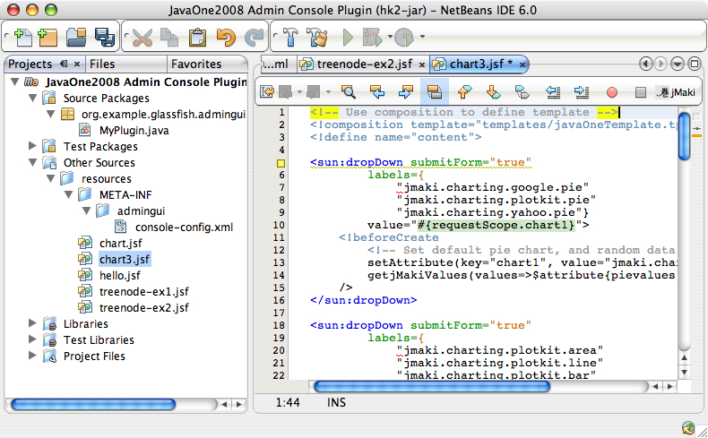
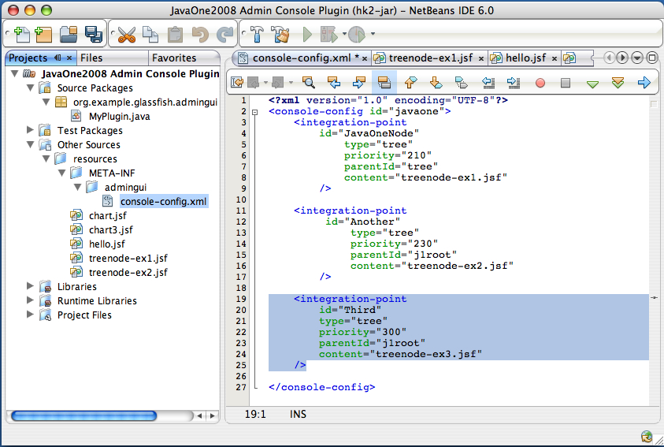
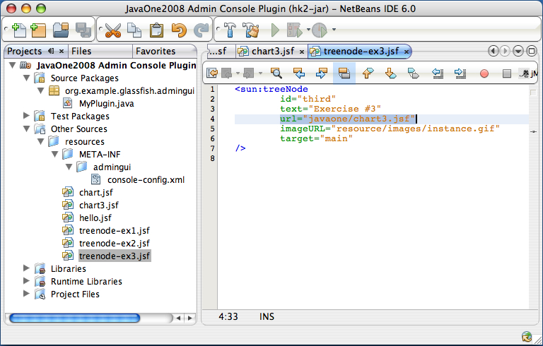
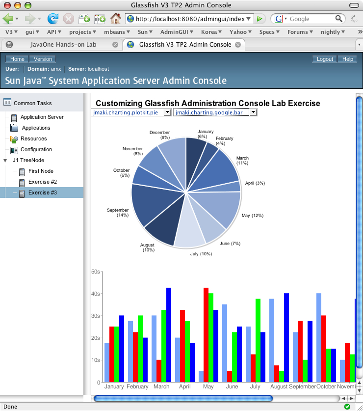

Exercise 3: Templating your Plugin
Introduction:
In this exercise you will be incorporating all the previous steps and will be applying a Template to the JSF file which will define the layout and provide a header for your page. You will also be adding jMaki charting components to your JSF page and will continue to customize the Administration Console by adding another integration point or tree node. In this exercise, you will do the following:
-
Create a JSF page which utilizes jMaki charting components and a Template file
-
Add another integration point to the Administration Console
- Access the GlassFish v3 Administration Console and see the jMaki Charts page with customized header
Background Information:
JavaServer Faces Templating makes building pages and components easier. When creating pages often we find ourselves repeating content across multiple pages and by using templates you can easily re-use code and make it easier to maintain. TBD: More info relating to Templating. TBD
% mv gfplugin/myplugin gfplugin/myplugin.save
% mkdir gfplugin/myplugin
% cp -R gfplugin/solution/myplugin/ex2 gfplugin/myplugin
Step-by-Step Instructions:
Overview:
In this excercise, you will complete the following:
- Create a jMaki Charting page within a Template
You will create a JSFTemplating JavaServer Faces pages that contains a jMaki Charting component with a template.
- Modify your console-config.xml
You will modify your configuration file to add a new integration point
- Specify your Tree Node layout
In this step you will add the file
"treenode-ex3.jsf"for specifying the new tree node that points to the customized jMaki Charting page - Build and Install your first GlassFish v3 plugin
In this step you will install and test your plugin.
Steps:
A. Create a jMaki Charting page with a Template
You should have myplugin project still open in
NetBeans. If you have closed the project, follow these steps to open
it again. More detailed instructions can be found in exercise 1-A
- Open the plugin module in NetBeans
- Launch NetBeans IDE 6.0.
- Open plugin module.
- Choose
Open Projectfrom theFilemenu. - Browse to
gfpluginand selectmyplugin. - Press the
Open Projectbutton.
Figure 1-1: Open Project myplugin
- Choose
- Create your JSF page that shows the jMaki chart in a template
NetBeans users, follow these steps:-
Select
Other Sources -> resources.
-
Create an empty file named
"chart3.jsf" -
Edit
"chart3.jsf". In this step, you will create a JSF page based on a template, and add the jMaki Charting component to it. Notice that the only change in this file when compared to"chart.jsf"in exercise #2 is that you are invoking templatejavaOneTemplate.tpl.<!composition template="templates/javaOneTemplate.tpl"> <!define name="content"> <sun:page> <!beforeCreate getjMakiValues(values=>$attribute{pievalues}); getjMakiValues(values=>$attribute{gryvalues}); getjMakiValues(values=>$attribute{bluvalues}); getjMakiValues(values=>$attribute{pnkvalues}); getjMakiValues(values=>$attribute{redvalues}); /> <sun:html> <sun:markup tag="head"> <sun:link url="/theme/com/sun/webui/jsf/suntheme/css/css_master.css" /> <sun:markup tag="title"> <staticText value="jMaki Charting!" /> </sun:markup> <sun:script url="/resources/jmaki.js" /> <sun:script url="/theme/META-INF/dojo/dojo.js" /> <sun:script url="/theme/META-INF/json/json.js" /> <sun:script url="/theme/META-INF/prototype/prototype.js" /> <sun:script url="/theme/META-INF/com_sun_faces_ajax.js" /> </sun:markup> <sun:markup tag="body"> <sun:form id="form"> <sun:markup tag="div" style="width:380px; height: 310px;"> <sun:dropDown labels={"jmaki.charting.yahoo.pie" "jmaki.charting.google.pie" "jmaki.charting.plotkit.pie"} value="#{requestScope.chart1}"> <!beforeCreate setAttribute(key="chart1", value="jmaki.charting.google.pie"); /> </sun:dropDown> <sun:button value=" Refresh " /> <jmaki:widget name="#{requestScope.chart1}" args="{colorScheme:2}" value="{ xAxis : { title : 'Months', labels : [ {label : 'January'}, {label : 'February'}, {label : 'March'}, {label : 'April'}, {label : 'May'}, {label : 'June'}, {label : 'July'}, {label : 'August'}, {label : 'September'}, {label : 'October'}, {label : 'November'}, {label : 'December'} ] }, data : [ { label : 'Set 1', values : $attribute{pievalues} } ] }"/> </sun:markup> <sun:dropDown labels={"jmaki.charting.plotkit.area" "jmaki.charting.plotkit.line" "jmaki.charting.plotkit.bar" "jmaki.charting.google.area" "jmaki.charting.google.bar" "jmaki.charting.google.line" "jmaki.charting.yahoo.line" "jmaki.charting.yahoo.bar" "jmaki.charting.dojo.bar" "jmaki.charting.dojo.line" "jmaki.charting.dojo.area"} value="#{requestScope.chart2}"> <!beforeCreate setAttribute(key="chart2", value="jmaki.charting.yahoo.bar"); /> </sun:dropDown> <sun:button value=" Refresh " /> <sun:markup tag="div" style="width: 500px; height: 280px;"> <jmaki:widget name="#{requestScope.chart2}" value="{ xAxis : { title : 'Months', labels : [{ label : 'January'}, { label : 'February'}, { label : 'March'}, { label : 'April'}, { label : 'May'}, { label : 'June'}, { label : 'July'}, { label : 'August'}, { label : 'September'}, { label : 'October'}, { label : 'November'}, { label : 'December'} ] }, yAxis : { title : 'Temperature', labels : [{ label : '0', value : 0}, { label : '10s', value : 10}, { label : '20s', value : 20}, { label : '30s', value : 30}, { label : '40s', value : 40}, { label : '50s', value : 50} ] }, data : [ {label : 'Gray Series', values : $attribute{gryvalues} }, {label : 'Pink Series', values : $attribute{pnkvalues} }, {label : 'Blue Series', values : $attribute{bluvalues} }, {label : 'Red Series', values : $attribute{redvalues} } ] }"/> </sun:markup> </sun:form> </sun:markup> </sun:html> </sun:page> </define> </composition>
Figure 3-2: Create Chart3.jsf
-
Select
-
Double click on
Other Sources ->resources ->META-INF ->admingui -> console-config.xml -
Edit the file and add the following
integration point. You can refer to Solution 3 for the entire file.<integration-point id="Third" type="tree" priority="300" parentId="j1root" content="treenode-ex3.jsf" />
Figure 3-3: Modify console-config.xml -
Select
Other Sources -> resources
-
Create an empty file named
treenode-ex3.jsfunderresources -
Edit
treenode-ex3.jsfto specify the information regarding this second tree node.
<sun:treeNode id="third" text="Exercise #3" url="javaone/chart3.jsf" imageURL="resource/images/instance.gif" target="main" />
Figure 3-4: Edit of treenode-ex3.jsf -
Right click on the project
"Java One 2008 Admin Console Plugin" - Select Build.
-
go to your
gfplugindirectory
cd <path-to-gfplugin>
-
Shut down the server which was started in previous exercise
glassfish/bin/stop-domain
-
Integrate the jar to GlassFish by copying it to the glassfish modules directory
%cp myplugin/target/console-myplugin-1.0-SNAPSHOT.jar glassfish/modules/console-myplugin-1.0-SNAPSHOT.jar
-
Start the server again,
glassfish/bin/asadmin start-domain
-
In the browser enter the following URL to bring up the
Admin Console.
http://localhost:8080/admingui/index.jsf
Expand the JavaOne tree node which is displayed in the Navigation Tree. Note that there is a new tree node "exercise #3" added under it. Click on the "exercise #3" tree node which displays the charts and notice that there is a header added to the charting page

Figure 3-5: Browser showing the plugin page with charts.
B. Modify your console-config.xml
You now need to add an integration point for plugging the exercise-3 tree node
to the Administration Console.
Just like in the previous exercise, you need to edit it and add the third integration point. You want the exercise-3 tree node to be under the JavaOne tree node.
So, we specify the parentId to be "j1root". You can refer to
treenode-ex1.jsf to see this. You also need to create the file
treenode-ex3.jsf which will point to the JSF jMaki chart page.
C. Specify your Tree Node layout
You will need to create a new file "exercise-3.jsf" which is specfied as the "content" of your third integration point.
Step-by-step instructions in NetBeans:
D. Build and Install your first GlassFish v3 plugin
The last step of this implementation is to build the project.
Note: If you are using a command line and have "maven 2" installed
The last step of this implementation is to build the project on your system. You can build the project by typing the following command:
cd gfplugin/plugin
mvn install
NetBeans users can build the module jar file by following these steps.
After the above steps are finished, you will have the jar file named
gfplugin/myplugin/target/console-myplugin-1.0-SNAPSHOT.jar.
This jar file is ready to install into GlassFish v3.
You now need a Terminal to enter some commands, please bring up a terminal window.
For your convenience, GlassFish V3 has been installed as gfplugin/glassfish.
The following steps show you how to integrate and test your plugin module.
Step-by-step instruction:
Try to change the dropdown box to select another charting style